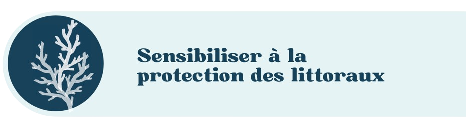

Les yeux rivés vers l'océan
Un vent venu du large pousse l'équipage de SEAD dans la même direction. Notre navire fait cap sur la côte de la sensibilisation et de la création.
Notre navire fait escale vers la sensibilisation à la protection des littoraux. Notre média social a pour souhait d'éveiller les consciences sur les littoraux français et leur préservation.
Nos littoraux ne cessent de souffrir ces dernières années, les chiffres, les rapports, les spécialistes, nous le démontrent, mois en mois, année en année.
De nombreuses personnes ou organismes proposent des solutions et des actions pour préserver la beauté bleue de notre planète. Notre mission : mettre en lumière ces actions, mettre en avant ces acteurs qui font tout pour garantir un avenir pour les futures générations.
Nous sommes une équipe soudé :